Methodology¶
The methodology used in this work to characterize the coherent structures are divided in three main steps: the calculation of a local function to detect the vortex; the localization of the maxima of this function; and the adjustment (fitting) of this field to the proposed model.
Detection methods¶
In this section, the detection methods implemented in the code for vortex identification are presented. These methods are based on the velocity gradient tensor, \(\overline{D}\), that can be written as (1)
As this is a second order tensor, it can be decomposed into a symmetric and anti-symmetric part, \(D_{ij} = S_{ij} + \Omega_{ij}\) where:
\(S_{ij}\) is known as the rate-of-strain tensor (2) and \(\Omega_{ij}\) is the vorticity tensor (3).
The characteristic equation for \(\bar{D}\) is given by (4) :
where P (5), Q (6) and R (7) are the three invariants of the velocity gradient tensor. Using the decomposition into symmetric and anti-symmetric parts, these invariants can be expressed as:
Q criterion¶
The \(Q\) criterion proposed by Hunt et al (1988) [HUNT1988] identifies the vortices as flow regions with positive second invariant of \(\bar{D}\). An additional condition is that the pressure in the eddy region should to be lower than the ambient pressure. Chakraborty et al (2005) [CHAKRA2005] quoted “in an incompressible flow \(Q\) is a local measure of the excess rotation rate relative to the strain rate”.
In practical terms, the vortex is detected in case of the second invariant \(Q > 0\).
\(\Delta\) criterion¶
Chong et al (1990) [CHONG1990] define a vortex core to be the region where \(\bar{D}\) has complex eigenvalues. In order to determine if the eigenvalues are complex, we examine the discriminant of the characteristic equation (8), considering the flow incompressible (\(P = 0\)).
Swirling strength criterion¶
The swirling strength criterion \(\lambda_{ci}\) (9) was developed by Zhou et al (1999) [ZHOU1999]. It defines a vortex core to be the region where \(\bar{D}\) has complex eigenvalues. It is based on the idea that the velocity gradient tensor in Cartesian coordinates can be decomposed as:
where \(\lambda_r\) is the real eigenvalue, related to the eigenvector \(\bar{\nu_r}\), and the complex conjugate pair of complex eigenvalues is \(\lambda_{cr} \pm i\lambda_{ci}\), related to the eigenvectors \(\bar{\nu_r} \pm i\bar{\nu_{ci}}\). The strength of this swirling motion can be quantified by \(\lambda_{ci}\), called the local swirling strength of the vortex. The threshold for \(\lambda_{ci}\) is not well-defined, but theoretically any value greater than zero should be considered a vortex. Experimental results [ZHOU1999] shows that \(\lambda_{ci} \geq \epsilon > 1.5\) give smoother results.
Localization of the extrema¶
To have smooth results on the swirling strength, we apply a normalization of the field (10). The swirling strength is divided by the wall-normal profile of its RMS value:
Then the local maxima of the detection can be identified. The normalization is not required for the HIT cases, it is only used when we have an non-homogeneous direction.
In Fig. 1 we see the original swirling strength field, where 104 vortices were found, mostly near the wall, where the boundary layer plays an important role in increasing the swirling strengtht. The yellow circles corresponds to the vortices rotating clockwise and the green circles for the counter-clockwise rotation.
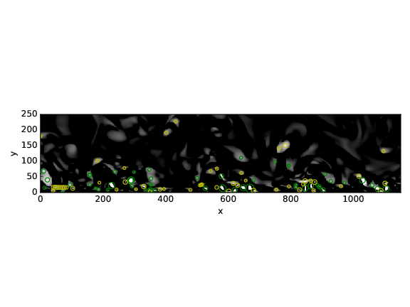
Fig. 1 Swirling strength detection¶
In figure Fig. 2 we show the fluctuation of the swirling strength field, by applying the Reynolds decomposition, now with 202 vortices found, minimizing the wall influence over the detection.
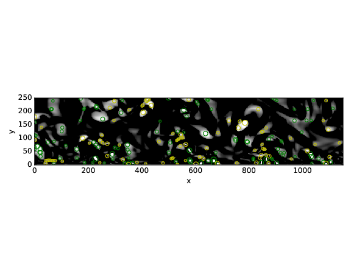
Fig. 2 Swirling strength detection applying Reynolds decomposition¶
We can play with the distance between one detected vortex and another, by increasing the box size of the peak detection. In Fig. 3 we set the box size to 12, instead of box size 6 used in Fig. 1 and Fig. 2. With this setting we reduce the detected vortices to 154, by removing the overlapping ones.
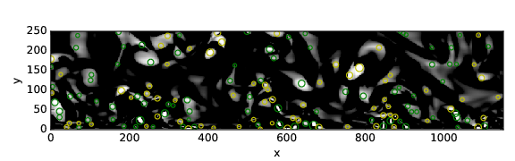
Fig. 3 Swirling strength detection with bigger box search (boxsize = 12)¶
One interesting fact about the swirling strength (as well the other methods) is that the local maximum values does not always match the center of the vortex. We show in Fig. 4 one example of this mismatch between them.
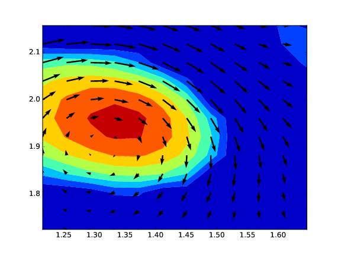
Fig. 4 Relation between velocity vectors and swirling strength field¶
Fitting of coherent structures¶
Using the peak of maximum swirling strength or identifying the places where the Q or \(\Delta\) criterion are higher than 0 gives us a rough estimation of a possible vortex and its center. But even using a threshold on these methods, the presence of a real vortex is not always true. To improve this detection we use a Lamb-Oseen vortex model to be fitted on top of the actual detected peak to check if it is really a vortex.
Rankine vortex¶
The Rankine vortex is a mathematical model for the flow velocity in the circumferential direction (\(\vec{e_\theta}\)), shown below.
Lamb-Oseen vortex¶
The Lamb-Oseen vortex is a mathematical model for the flow velocity in the circumferential direction (\(\vec{e_\theta}\)), shown below. It models a line vortex that decays due to viscosity.
where \(r\) is the radius, \(r_0 = \sqrt{4 \nu t}\) is the core radius of vortex, \(\nu\) is the viscosity and \(\Gamma\) is the circulation contained in the vortex.
Since the coherent structures are in movement, we add the advective velocity \(\vec{u_a}\) to the Lamb-Oseen vortex model shown below.
Batchelor vortex¶
The Batchelor model proposed here is based on the Lamb-Oseen model, with an extension for the vertical velocity, as used by [LACAZE2007].
Correlation coefficient¶
The correlation coefficient between the fitted model and the velocity field is calculated according to equation (15) and if it’s higher than a chosen threshold (typically 0.75), we can consider it a vortex.
Non-linear least squares¶
Levenberg Marquardt method¶
The Levenberg–Marquardt algorithm, also known as the damped least-squares method, is used to solve non-linear least squares problems. These minimization problems arise especially in least squares curve fitting.
Powell’s dogleg method¶
The Powell’s method is an algorithm for finding a local minimum of a function. This function doesn’t need to be differentiable and no derivatives are taken. It does this using a combination of Newton’s method and the steepest descent method. This is a so-called trust region method. This means that every step moves the current point to within a finite region. This makes the method more stable than Newton’s method.
Validation¶
In this section, the fitting of the Lamb-Oseen vortex model is tested under different scenarios. For the first comparison a standard Lamb-Oseen vortex is created and VortexFitting tries to estimate its parameters. Four different cases (Fig. 5, Fig. 6, Fig. 7 and Fig. 8), varying the core radius, the circulation $Gamma$ and the distance of the center of vortex to the center of window (shift), are presented.
{kind=link}
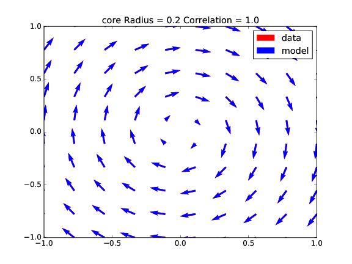
Fig. 5 Case A - core radius = 0.2, \(\Gamma = 10\), x/y shift = 0¶
{kind=link}
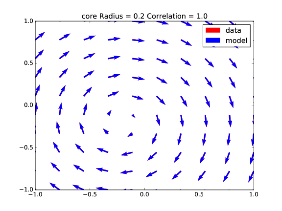
Fig. 6 Case B - core radius = 0.2, \(\Gamma = 10\), x/y shift = 0.2¶
{kind=link}
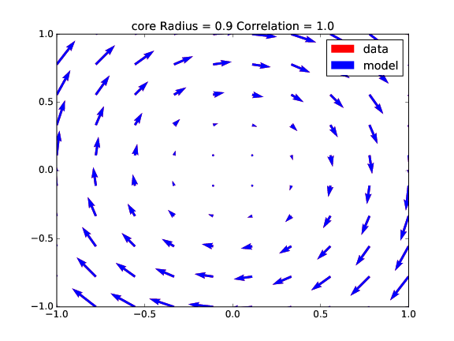
Fig. 7 Case C - core radius = 0.9, Gamma = 40, x/y shift = 0¶
{kind=link}
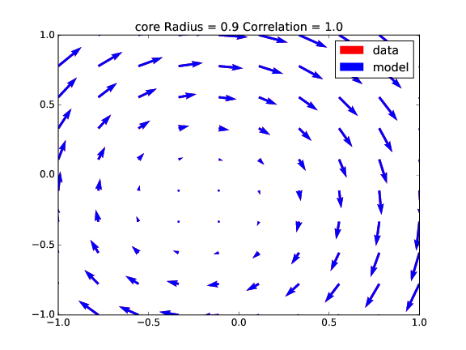
Fig. 8 Case D - core radius = 0.9, \(\Gamma = 40\), x/y shift = 0.2¶
Table 1 presents the fitting results: the guess is exact for all the cases (correlation = 1), as the data and model vectors totally overlaps themselves.
Param/Case |
A |
B |
C |
D |
|---|---|---|---|---|
radius |
0.2000 |
0.2000 |
0.9000 |
0.8999 |
circulation |
10.0000 |
10.0000 |
40.0000 |
39.9999 |
x shift |
0.0000 |
0.2000 |
0.0000 |
0.2000 |
y shift |
0.0000 |
0.2000 |
0.0000 |
0.2000 |
correlation |
1.0000 |
1.0000 |
1.0000 |
1.0000 |
For the second set of tests, a random noise is added to the original vortex field, creating a perturbation to the initial flow field. The fitting provides the results in Table 2, corresponding to for cases (Fig. 9, Fig. 10, Fig. 11 and Fig. 12). We can see a better correlation for the stronger vortices (higher circulation), meaning that they are less affected by the perturbation.
{kind=link}
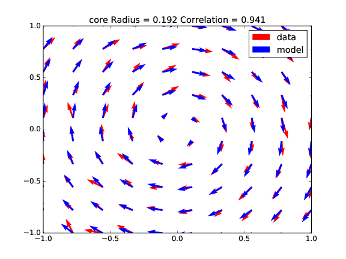
Fig. 9 Case A with perturbation - core radius = 0.2, \(\Gamma = 10\), x/y shift = 0¶
{kind=link}
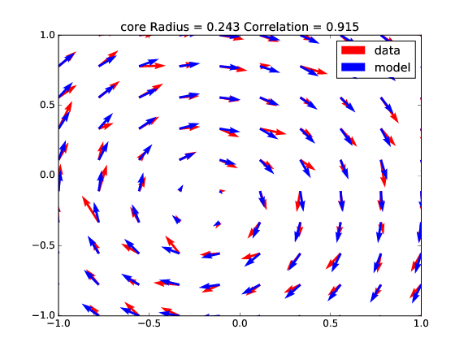
Fig. 10 Case B with perturbation - core radius = 0.2, \(\Gamma = 10\), x/y shift = 0.2¶
{kind=link}
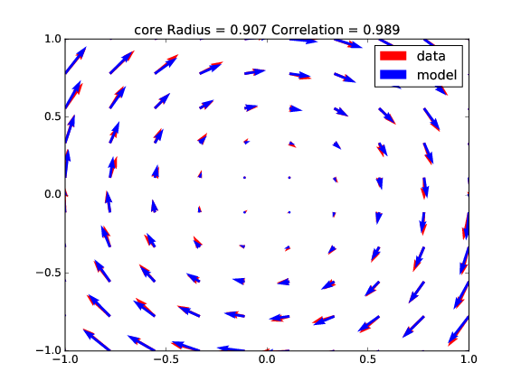
Fig. 11 Case C with perturbation - core radius = 0.2, \(\Gamma = 40\), x/y shift = 0¶
{kind=link}
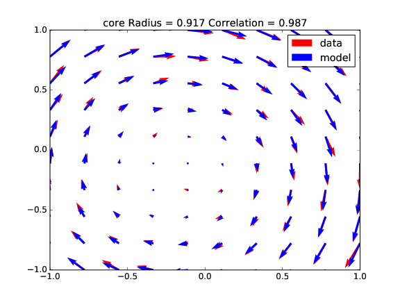
Fig. 12 Case D with perturbation - core radius = 0.2, \(\Gamma = 40\), x/y shift = 0.2¶
Param/Case |
A |
B |
C |
D |
|---|---|---|---|---|
radius |
0.1917 |
0.2427 |
0.9067 |
0.9169 |
circulation |
10.1863 |
9.9743 |
40.4885 |
40.5987 |
x shift |
0.0035 |
0.1946 |
0.0098 |
0.1953 |
y shift |
0.0028 |
0.1918 |
0.0085 |
0.1995 |
correlation |
0.9406 |
0.9153 |
0.9895 |
0.9869 |
References¶
Zhou J., Adrian R. J., Balachandar S., and Kendall T. M. Mechanisms for generating coherent packets of hairpin vortices in channel flow. J. Fluid Mech., 387:353–396, 1999.
Chakraborty P., Balachandar S., and Adrian R. J. On the relationships between local vortex identification schemes. J. Fluid Mech., 535:189–214, 2005.
Chong M. S., Perry A. E., and Cantwell B. J. A general classification of three-dimensional flow fields. Phys. Fluids, 2:765–777, 1990.
Hunt, J. C. R., Wray, A. A. & Moin, P. Eddies, stream, and convergence zones in turbulent flows. Center for Turbulence Research Report, CTR-S88, 1988
Lacaze, L., Ryan, K., & Le Dizès, S. Elliptic instability in a strained Batchelor vortex. Journal of Fluid Mechanics, 577 :341–361, 2007